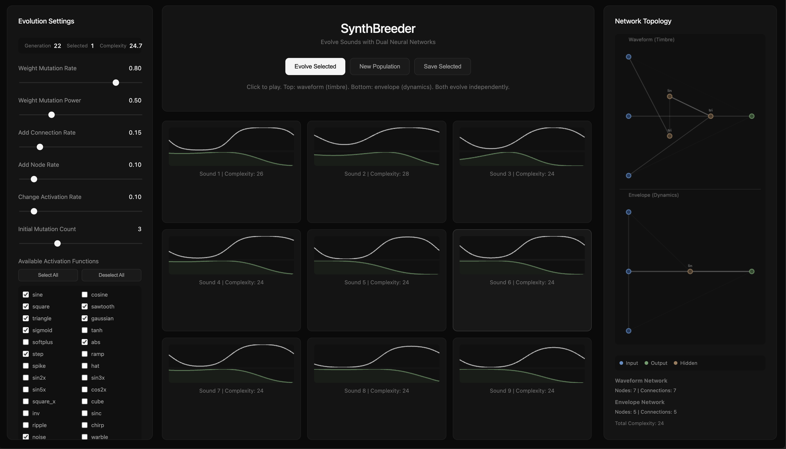
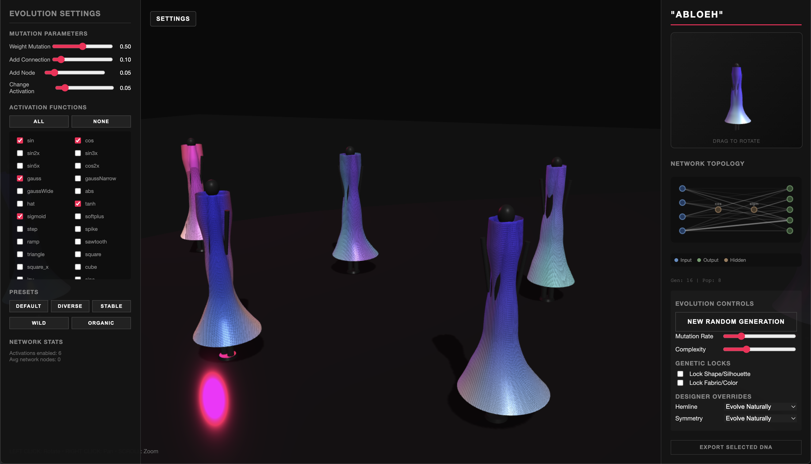
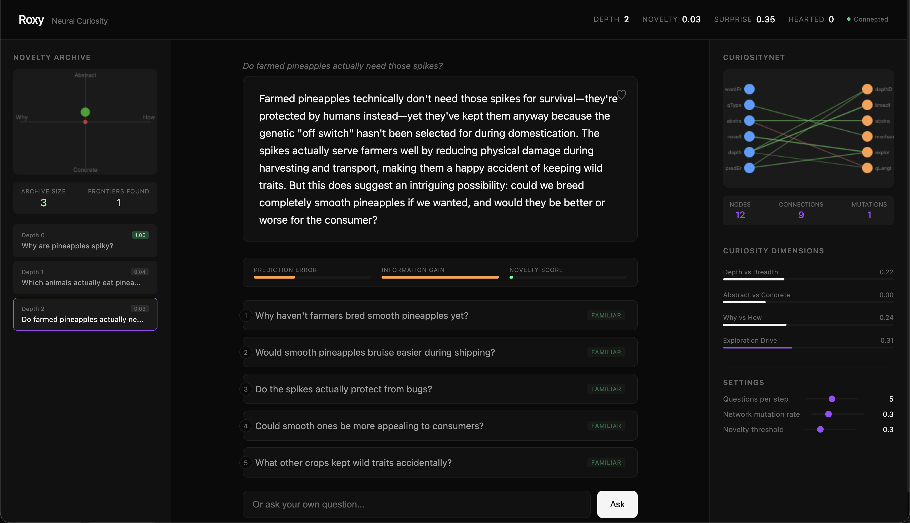

Open-ended Human-AI Creativity Platforms
SYnthBreeder
Unlike traditional synthesizers with fixed parameters, SynthBreeder explores an open-ended
space of possible sounds through evolutionary computation.

The user selects which sound they find interesting from each generation and the system evolves
increasingly complex variations. The underlying neural networks start simple and complexify
over time, discovering sonic textures that would be impossible to design manually. Each
network topology is unique, encoding audio waveforms and envelopes through compositions of mathematical
activation functions.
→ Try SynthBreeder
"AblOEh"
An open-ended, 3D, evolutionary fashion design platform that generates dresses through a combination
of explicitly encoded trait-based genetics (hemline, silhouette, waist width) and neural networks
that control color, texture, and morphology.

Users can lock certain traits (shape, pattern) while allowing others to evolve, or apply
designer overrides (force asymmetric hemlines, strict symmetry).
Each dress is a phenotype expressed from a genotype containing both parametric traits
and a CPPN that evaluates color and displacement at every vertex.
Selection pressure comes from human aesthetic judgment and complexity grows organically over generations.
→ Try "AblOEh"
Roxy
A platform that guides your curiosity towards questions you wouldn't have otherwise asked.

At the moment I'm very passionate about creating ambient intelligence that learns passively, not by instruction. Another goal of mine is to use AI for introspective work; as you use it you can track parts of your cognition
how an Oura Ring might help track your sleep cardiovascular health.
→ Try Roxy!!
On Open-Endedness
The main idea behind all these platforms is that by using these tools, a human designer can discover
ideas that would otherwise never be illuminated in the labyrinth of the creativity search space. In a very nerdy way,
if we think of art as a search problem where the Mona Lisa lies in one corner of the painting search-space,
and The Starry Night is hidden away in another, my platforms help humans traverse the space
more intelligently towards these hidden masterpieces.
By placing humans in the selection loop, we create a co-creative process where the
algorithm explores possibility space and humans provide the fitness function through
their choices. Solutions are neither purely human-designed
nor purely algorithmic, but a synthesis that neither could achieve alone.
Additionally, the system seems to act as a mirror; it reveals the humans taste in surprising ways.
Open-endedness today is niche sub-community within artificial intelligence but I think it will be
as important to the future of AI as deep learning was. Creativity is fundamentally open-ended and
using AI to push the boundaries of human creativity and innovation seems like an obvious next step for
AI.